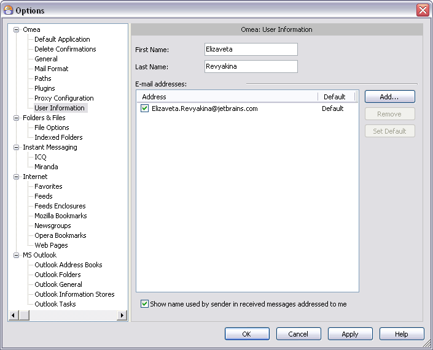
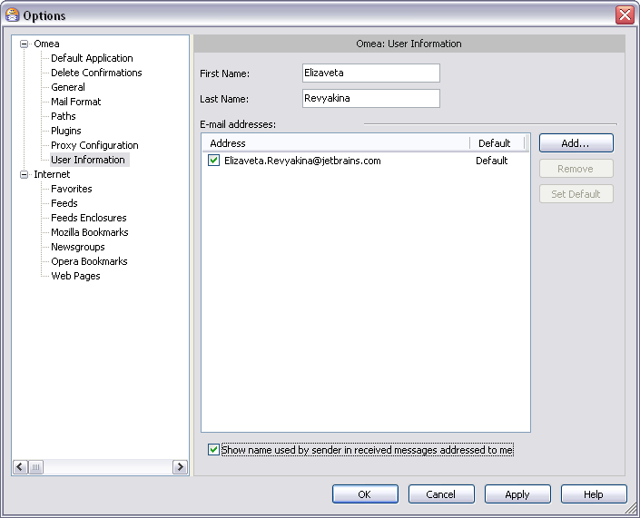

User Information
You can access this option from the Main menu: Tools | Options: Omea: User Information
This page provides options for providing Omea information about you so that it can recognize resources that you originate, and identify e-mails messages that are addressed to or sent by you. This helps Omea create appropriate contexts and links.
 Options dialog showing User Information options
Options
First Name
Your first name that will be shown as the originator in e-mails and newsgroup postings that you create using Omea ReaderOmea Pro.
Last Name
Your last (family) name that will be shown as the originator in e-mails and newsgroup postings that you create using Omea ReaderOmea Pro.
Own E-mail Addresses
This is a list of the e-mail addresses that belong to you. Omea Pro uses your Windows user profile and MS Outlook accounts to detect your e-mail addresses. Besides those detected (if any), you can add additional addresses that you want to identify as belonging to you using the Add button.
Check the box near the e-mail address if you want to tell Omea that this e-mail address is going to be
This is a list of the e-mail addresses that belong to you. Please note that Omea Reader does not detect e-mail addresses belonging to you, so in order for other options to work, you need to be sure to enter an e-mail address for yourself in this field. Your e-mail address is required, for example, for "Mark messages from me as read" when you work with the News.
Add
This button allows to add a new address to the list of your own e-mail addresses. If you click this button, a Enter address field appears in the list of Own e-mail addresses. Type the new address, press Enter or click in any place of the Own e-mail address list, and it will appear in the list.
Remove
This button allows to remove the e-mail addresses which exist in the list.
Set Default
If you select the e-mail address in the list of addresses and click the Set Default button, this address will become a "default", i.e. this address will become a primary address used for your communication.
Show Name Used by Sender in Received Messages Addressed to Me
In some cases you may receive e-mails, or newsgroup articles or feed posts where your contact details are changed, i.e. the user which sent you an e-mail or answered your newsgroup post used a name different from the one in your contact details or in the contact details of the Contact the information about which you already have in Omea. If you check this option, messages which you receive will display those contact details which other users have mentioned (but not those in contact details).
Help
A jumper to this dialog features description in Omea ReaderOmea Pro Help.